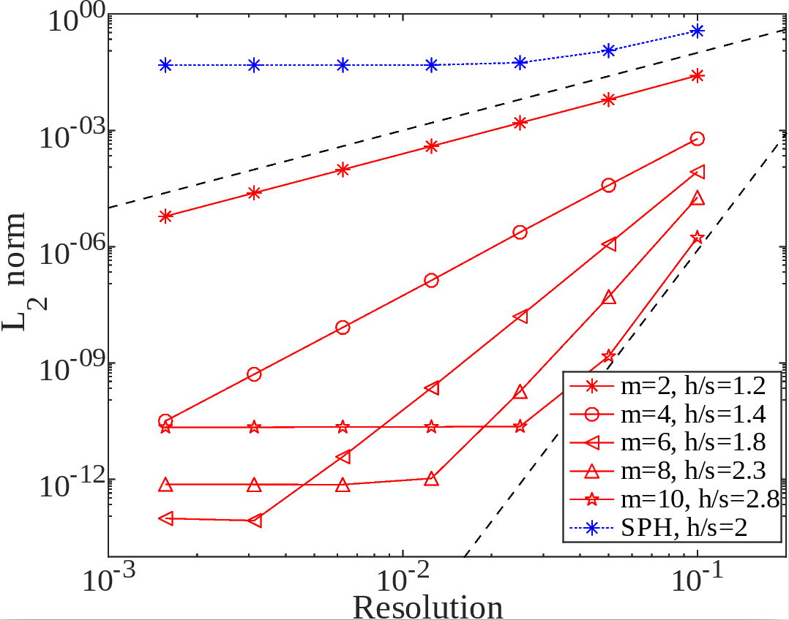

Research
Broadly, my research involves developing new numerical methods to simulate fluid dynamics problems, and using these methods to obtain new insights into fundamental physical behaviours. I have a particular focus on complex fluid problems which are challenging for conventional methods and often require highly accurate or adaptive numerical schemes.
High-order meshless methods

The Local Anisotropic Basis Function Method (LABFM)
[1][2] is a mesh-free method which allows arbitrarily high-order (e.g. 10th) discretisations on an unstructured node set. It combines the geometric flexibility of other mesh-free methods (such as SPH, see below), with high-order finite differences. We have implementations of LABFM for a range of different flow types, including turbulent reacting flows and viscoelastic flows. Much of the research of the group involves the development and use of LABFM for direct numerical simulations (DNS) of turbulent combustion.
Combustion in complex geometries
Using LABFM to understand fundamental combustion dynamics. For example, the image below shows contours of heat release rate for during the ignition of hydrogen in a porous geometry. More to follow in due course.
Viscoelastic flow simulation and elastic instabilities
Starting with our work on smoothed particle hydrodynamics
[3] we have developed several mesh-free solvers for viscoelastic flows, including LABFM-based, with options for EVSS, log-conformation and Cholesky decomposition formulations. More to follow in due course.
Smoothed Particle Hydrodynamics for bubbly waves
This project involves the development of a multiphase Smoothed Particle Hydrodynamics framework to simulate air-bubble entrainment in breaking waves. More details in
[4], soon to be published in JFM.
The Kaye effect
Sometimes when a jet of shampoo is poured from a bottle it appears to leap on landing. This phenomenon, called the
Kaye effect had baffled rheologists for half a century. One theory proposed that the jet slipped on a thin layer due to the shear-thinning nature of the liquid. Another theory involed the jet slipping on a very thin air layer. We performed experiments in a vacuum chamber
[5], showing that air is a key ingredient for the effect, confirming the air layer theory. We also developed a simple mechanistic model which explained why the effect occurs in some fluids and not others, showing that elasticity is crucial, whilst shear thinning plays only a small role.